Cada anúncio é apresentado como um card operacional: tudo o que o gestor precisa para subir a campanha está ali — plataforma, objetivo, público exato, copy, criativo de exemplo, orçamento e link de destino. Os organogramas mostram a ordem e como as peças se alimentam.
O segredo de um lead barato não está no criativo — está em medir a coisa certa. Se o algoritmo não souber quem virou conversa e quem virou venda, ele vai otimizar para curiosos. A fundação abaixo é inegociável.
Instale o Pixel da Meta e a Conversions API (CAPI) para enviar o evento de “conversa iniciada” e os eventos de qualificação. No Google, ative o Google Tag + Conversões Otimizadas. O evento mais importante não é o clique: é a conversa qualificada e a venda. Esses eventos voltam para as plataformas como conversão e são a base do Lookalike (Seção VII).
Todo lead entra num CRM (RD Station, Kommo, HubSpot ou similar) com estágios: Novo → Conversa iniciada → Qualificado → Visita agendada → Proposta → Venda/Perdido. Esses estágios viram eventos offline enviados de volta ao Meta/Google — é assim que o algoritmo aprende a buscar quem fecha, não quem só clica.
Campanha: AQV | [Plataforma] | [Objetivo] | [Etapa] | [Praça]
Conjunto: [Público] | [Região] | [Faixa]
Anúncio: [Formato] | [Imóvel/Oferta] | [v1]
Ex.: AQV | Meta | Mensagens | TOFU | Maceió › Advantage+ | Raio 20km | 28-55 › Reels | FrenteMar | v1
Os números variam por praça e ticket, mas estas são as faixas-alvo que perseguimos. Use-as como semáforo, não como dogma.
| Indicador | Faixa-alvo de referência | Por que importa |
|---|---|---|
| Custo por lead (CPL) | R$ 4 – R$ 15 (MCMV) · R$ 15 – R$ 50 (médio/alto) | Volume barato |
| Custo por conversa qualificada | R$ 25 – R$ 90 | Qualidade do lead |
| Custo por visita agendada | R$ 120 – R$ 400 | Proximidade da venda |
| Lead → Visita | 15% – 30% | Eficiência do atendimento |
| Visita → Proposta | 30% – 50% | Conversão |
| Proposta → Venda | 30% – 60% | Fechamento |
Antes dos detalhes, veja o todo. Quatro camadas, várias plataformas, uma engenharia de dados no centro. Cada camada existe para um objetivo específico — e todas se alimentam de volta para baratear o lead a cada mês.
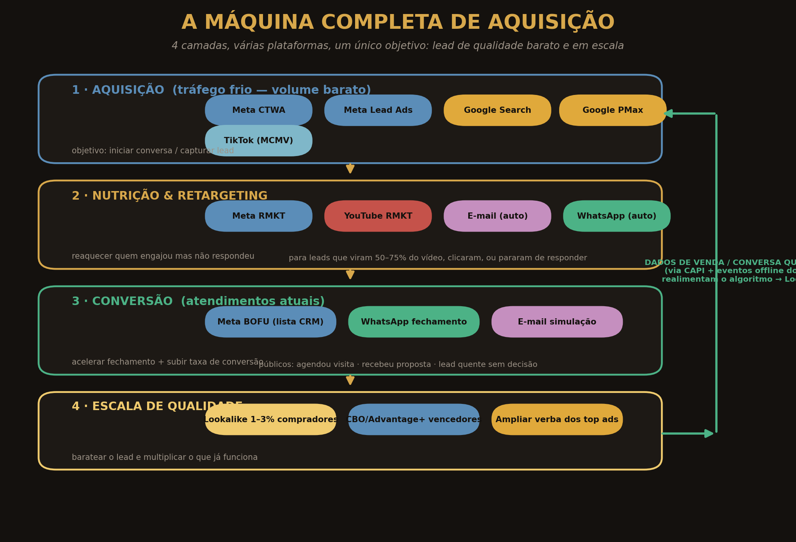
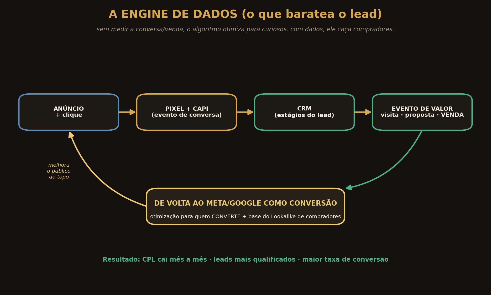
O Meta (Instagram + Facebook) é o motor de volume barato. Aqui rodamos o Marketing de Intenção: criativos que filtram, públicos amplos guiados pelo criativo, e clique direto para o WhatsApp. É onde a maior parte dos leads nasce.
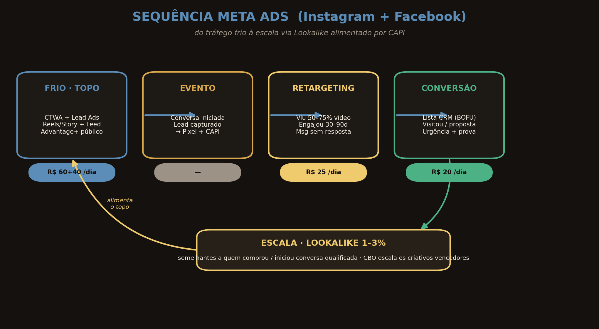
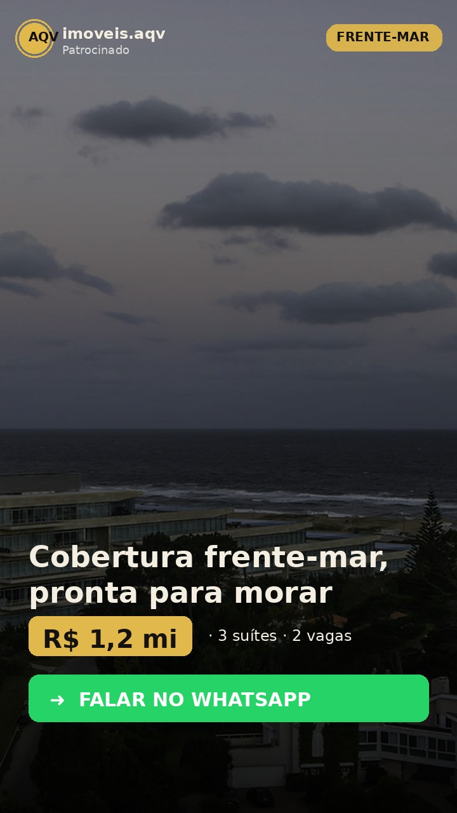
| Campanha | AQV | Meta | Mensagens | TOFU | [Praça] |
| Objetivo | Engajamento → Mensagens (WhatsApp) (otimizar p/ conversas iniciadas) |
| Tipo | Vídeo vertical (Reels/Stories) + Feed · Click-to-WhatsApp |
| Público | Advantage+ (amplo) · raio 20–30 km do imóvel ou estado/Brasil p/ investimento · 30–60 anos · excluir leads e clientes atuais |
| Copy | Título: “Cobertura frente-mar, pronta pra morar.” Texto: “3 suítes, 2 vagas e vista permanente no [bairro]. R$ 1,2 mi, aceita financiamento. Quer ver por dentro? Chama no WhatsApp.” CTA: Enviar mensagem |
| Orçamento | R$ 60/dia (validação) → escalar 20%/3 dias se CPL ok |
| Destino | WhatsApp com texto pré-preenchido: “Oi! Vim pelo anúncio da cobertura frente-mar.” |
| KPI | Custo/conversa < R$ 70 · taxa de resposta > 60% |
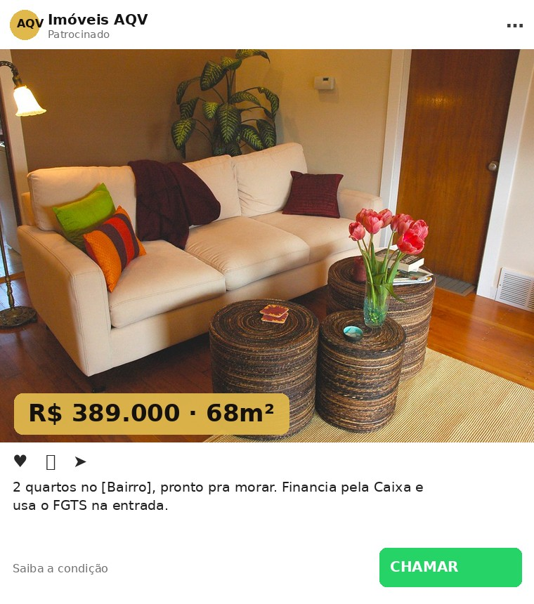
| Campanha | AQV | Meta | Mensagens | TOFU | [Praça] |
| Objetivo | Mensagens (WhatsApp) · conjunto separado por motivação “sair do aluguel/upgrade” |
| Tipo | Imagem/Vídeo Feed + Reels · Click-to-WhatsApp |
| Público | Advantage+ · raio 15–25 km · 28–50 anos · interesses amplos (deixe o criativo filtrar) |
| Copy | Título: “2 quartos no [bairro] — R$ 389.000, pronto pra morar.” Texto: “Financia pela Caixa e usa o FGTS na entrada. Saia do aluguel ainda este ano. Me chama que te explico a condição.” CTA: Enviar mensagem |
| Orçamento | R$ 50/dia |
| Destino | WhatsApp pré-preenchido com o nome do empreendimento |
| KPI | CPL < R$ 12 · custo/conversa qualificada < R$ 60 |
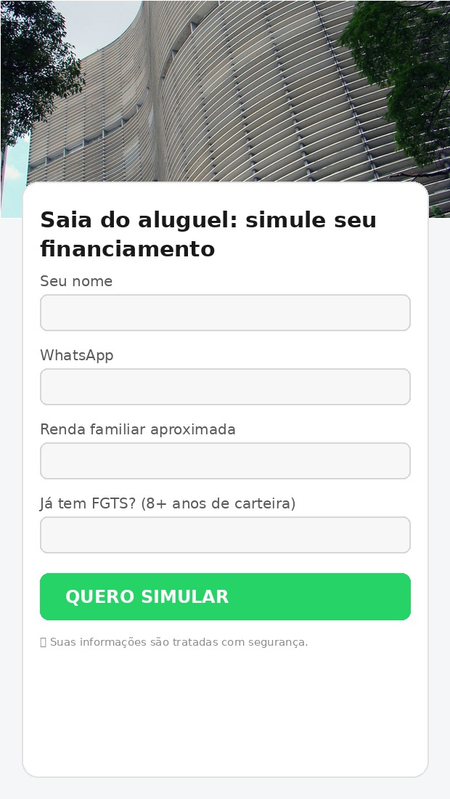
| Campanha | AQV | Meta | Leads | TOFU | [Praça] |
| Objetivo | Cadastros (Lead) · formulário de maior intenção (com perguntas) |
| Tipo | Vídeo/Imagem → Formulário instantâneo (não sai do app) |
| Público | Advantage+ · raio 20 km · interesses: imóveis, MCMV · Lookalike 1–3% de compradores (quando houver base) |
| Form | Nome · WhatsApp · Renda familiar · “Tem FGTS / 8+ anos de carteira?” (qualifica de saída) |
| Copy | Título: “Saia do aluguel: simule seu financiamento em 2 min.” CTA: Saiba mais · botão do form: “Quero simular” |
| Orçamento | R$ 40/dia |
| Destino | Lead → CRM → disparo automático de WhatsApp em < 5 min (Seção VI) |
| KPI | CPL < R$ 8 · % lead que responde 1º WhatsApp > 40% |
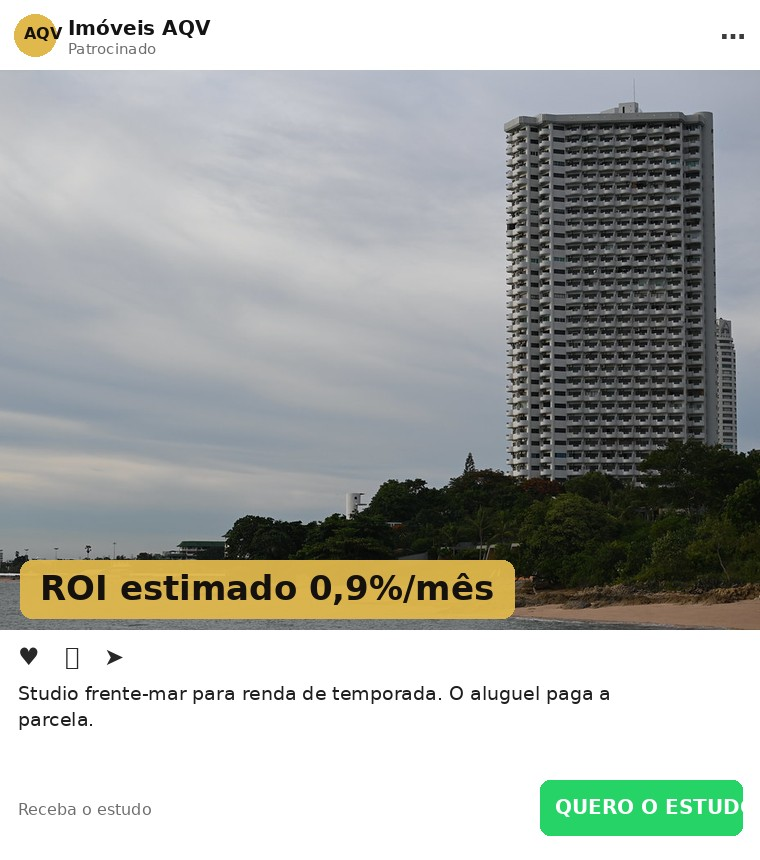
| Campanha | AQV | Meta | Mensagens | TOFU | Investidor |
| Objetivo | Mensagens · conjunto com motivação “renda/valorização” |
| Público | Brasil inteiro (não restringir à praça) · 30–60 anos · interesses: investimentos, imóveis na planta, renda passiva |
| Copy | Título: “Studio frente-mar para renda de temporada.” Texto: “O aluguel paga a parcela. Receba o estudo de rentabilidade da unidade. Chama no WhatsApp.” CTA: Enviar mensagem |
| Orçamento | R$ 40/dia |
| Destino | WhatsApp → enviar PDF do estudo de rentabilidade (isca) |
| KPI | Custo/conversa < R$ 90 (ticket alto justifica) |
O Google captura quem já está procurando imóvel agora — a demanda mais quente que existe. O TikTok abre um oceano de leads jovens e baratos para o MCMV. Juntos, complementam o volume do Meta com intenção e alcance.
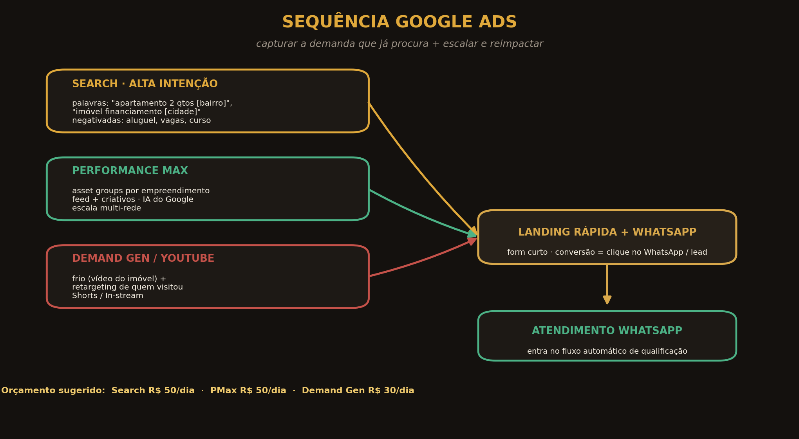
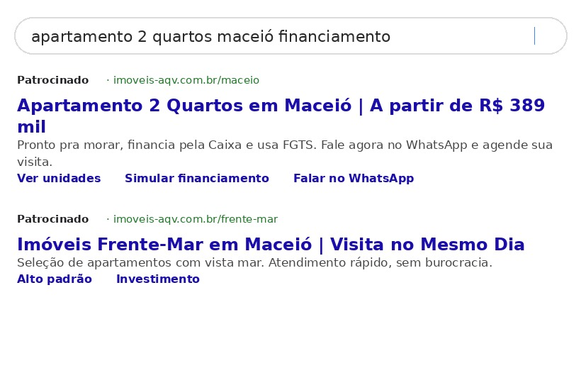
| Campanha | AQV | Google | Search | BOFU | [Cidade] |
| Tipo | Rede de Pesquisa · Anúncio responsivo (RSA) + extensões |
| Palavras | “apartamento 2 quartos [bairro]”, “imóvel à venda [cidade] financiamento”, “apartamento frente-mar [cidade]”, “[empreendimento]” |
| Negativas | aluguel, alugar, planta baixa, decoração, vagas de emprego, curso, como vender |
| Copy | Títulos: “Apartamento 2 Quartos em [Cidade]” · “A partir de R$ 389 mil” · “Financia + usa FGTS” · “Visita no mesmo dia” Descrição: “Pronto pra morar, sem burocracia. Fale no WhatsApp e agende sua visita hoje.” CTA/Extensões: Sitelinks (Simular · Ver unidades · WhatsApp) |
| Orçamento | R$ 50/dia · lances: Maximizar conversões |
| Destino | Landing rápida do empreendimento com botão de WhatsApp + form curto |
| KPI | Custo/conversão < R$ 60 · CTR > 6% |
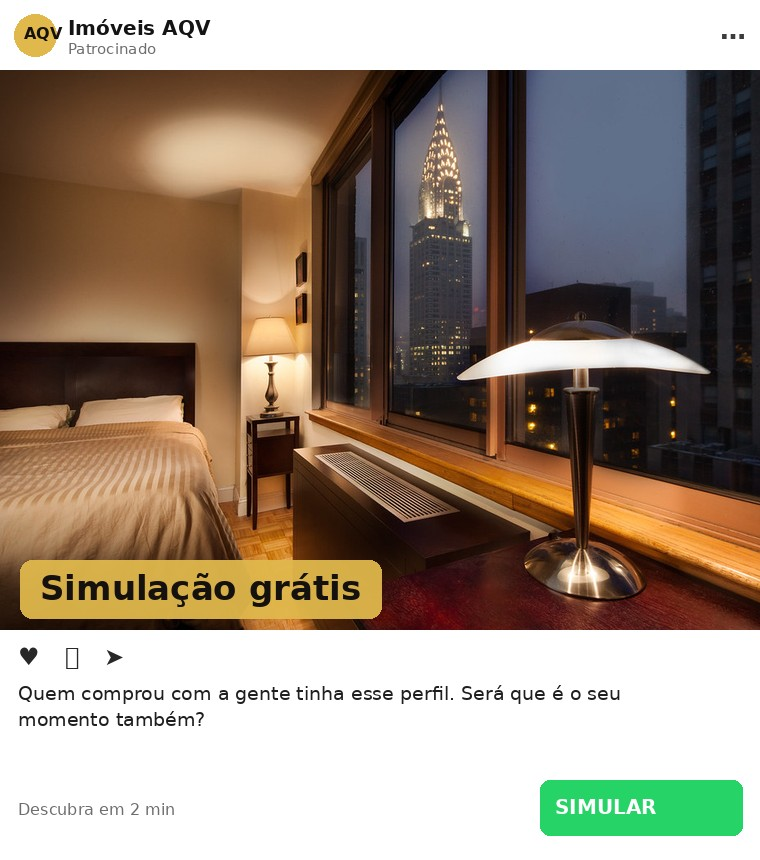
| Campanha | AQV | Google | PMax | Escala | [Cidade] |
| Tipo | Performance Max · 1 asset group por empreendimento (vídeos, imagens, títulos, descrições) |
| Sinais de público | Lista de clientes/leads (match) + “interessados em imóveis” + quem visitou a landing — como sinal, não trava |
| Copy | Reaproveite títulos/descrições do Search + 5 imagens + 1 vídeo vertical do imóvel por empreendimento. |
| Orçamento | R$ 50/dia (ligar após Search validado — Fase 2) |
| Destino | Mesma landing + WhatsApp · conversão = lead/WhatsApp |
| KPI | Custo/conversão ≤ Search · vigiar qualidade do lead (PMax tende a inflar volume) |
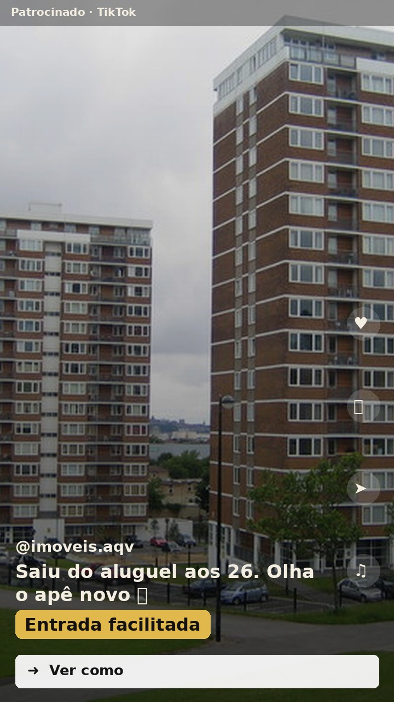
| Campanha | AQV | TikTok | Leads | TOFU | MCMV |
| Objetivo | Geração de leads (form nativo) ou tráfego para WhatsApp |
| Tipo | Vídeo nativo (estética “sem produção”), legenda grande, trend de áudio |
| Público | Região (raio) · 22–40 anos · amplo (algoritmo do TikTok otimiza rápido) |
| Copy | Gancho na tela: “Saiu do aluguel aos 26 👀 olha o apê novo” Texto: “Entrada facilitada, financia pela Caixa. Comenta ‘QUERO’ que eu te chamo.” CTA: Saiba mais |
| Orçamento | R$ 40/dia (Fase 2 — após Meta validado) |
| Destino | Form nativo → CRM → WhatsApp automático |
| KPI | CPL < R$ 6 · atenção à qualidade (qualificar forte no WhatsApp) |
Pouca gente compra no primeiro toque. O retargeting reapresenta prova e quebra objeções para quem já demonstrou interesse — é o tráfego mais barato e mais rentável do funil, porque fala com quem já te conhece.
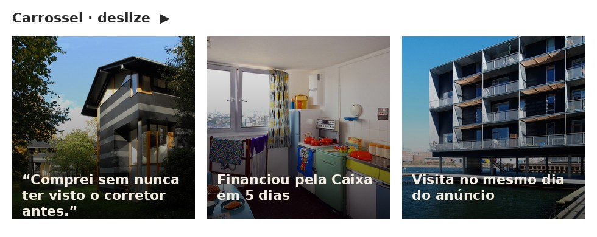
| Campanha | AQV | Meta | Mensagens | RMKT | Prova |
| Público | Custom Audiences: viu 50–75% dos vídeos (30–90d) · engajou no perfil IG/FB · clicou e não respondeu · visitou a landing — excluir quem já é atendimento ativo |
| Tipo | Carrossel: cada card uma prova (venda real, “financiou em 5 dias”, depoimento) |
| Copy | Texto: “Você viu o apê e sumiu? 😅 Olha quem já fechou com a gente. Bora tirar suas dúvidas?” CTA: Enviar mensagem |
| Orçamento | R$ 25/dia |
| Destino | WhatsApp · objetivo: reabrir conversa |
| KPI | Frequência < 3/semana · custo/conversa < metade do frio |
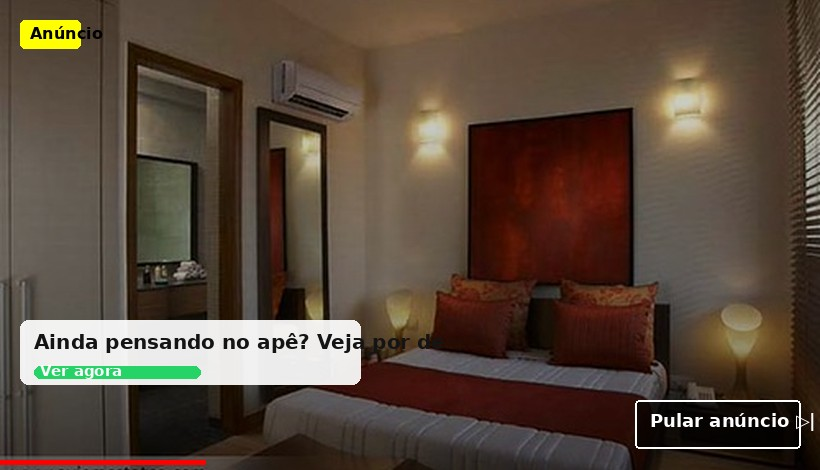
| Campanha | AQV | Google | DemandGen | RMKT | Vídeo |
| Público | Visitantes da landing (lista) + interagiu no canal · semelhantes a quem converteu |
| Tipo | In-stream pulável + Shorts · vídeo curto do imóvel com legenda |
| Copy | Gancho (3s): “Ainda pensando naquele apê? Olha por dentro.” CTA: Falar no WhatsApp |
| Orçamento | R$ 30/dia (Fase 2) |
| Destino | Landing + WhatsApp |
| KPI | CPV baixo · assistência à conversão (mede via lift, não último clique) |
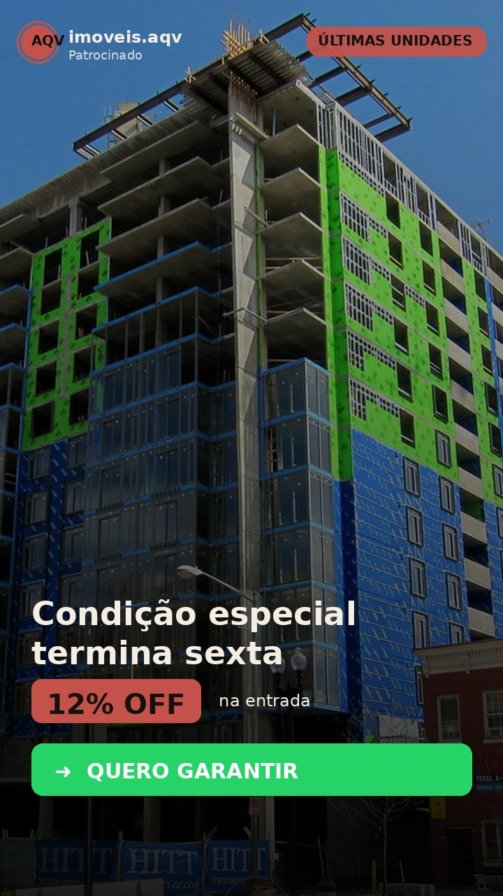
| Campanha | AQV | Meta | Mensagens | BOFU | Fechamento |
| Público | Lista do CRM (upload): estágios “Qualificado / Visita agendada / Proposta” · quem parou de responder há 2–10 dias |
| Tipo | Story/Reels de escassez real (últimas unidades, condição com prazo) |
| Copy | Título: “Últimas unidades — condição da entrada termina sexta.” Texto: “Você chegou a ver o [imóvel]. Garanto sua simulação hoje. Me chama.” CTA: Enviar mensagem |
| Orçamento | R$ 20/dia |
| Destino | WhatsApp do corretor que já atende o lead (continuidade) |
| KPI | Reativação de conversa > 20% · acelera dias até o fechamento |
O tráfego entrega a conversa; as automações fecham. Aqui estão as duas sequências que aceleram o tempo de fechamento e elevam a taxa de conversão dos atendimentos atuais — respondendo na hora, qualificando, provando e criando urgência sem você precisar lembrar de cada lead.
Lead de tráfego pago esfria em minutos. Esta régua dispara sozinha (via ManyChat/360dialog/CRM), garante a resposta em < 5 min e conduz o lead da curiosidade até a visita — recuperando quem some.
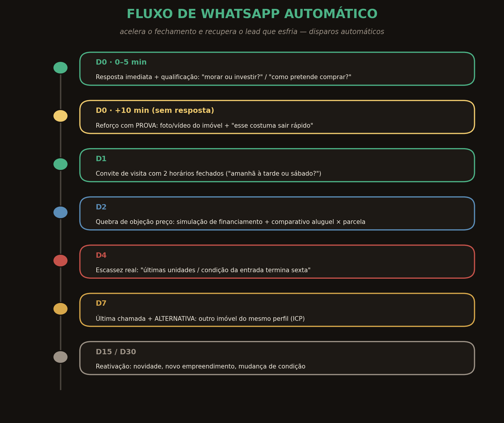
“Oi, [nome]! Vi que você se interessou pelo [imóvel]. Ele tem [metragem], [quartos] e está [condição]. Você procura para morar ou investir? E pretende financiar ou à vista? Assim já te mostro o que faz mais sentido. 👇”
As duas perguntas (intenção + capacidade) qualificam de saída. Quem responde entra para o corretor; quem não responde em 10 min recebe o reforço com prova, e assim por diante na régua do diagrama. A oferta de visita sempre vem com dois horários fechados (“amanhã à tarde ou sábado de manhã?”) para facilitar o sim.
Para os leads que deixaram e-mail (Lead Ads e landing), o e-mail constrói desejo e autoridade em paralelo ao WhatsApp — e reativa quem esfriou, a custo praticamente zero.
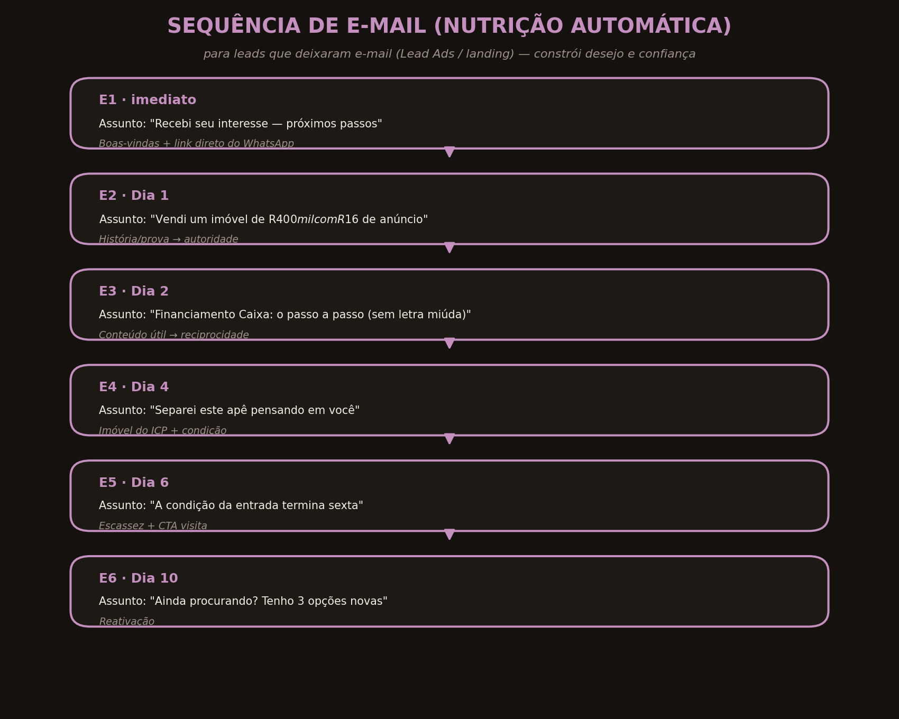
A lógica espelha a VSL: história e prova (E2), conteúdo útil que gera reciprocidade (E3 — passo a passo do financiamento), oferta com o imóvel do ICP (E4), escassez (E5) e reativação (E6). Cada e-mail tem um único CTA: voltar para a conversa no WhatsApp.
Escalar não é só aumentar verba — é ensinar o algoritmo a achar mais gente parecida com quem já comprou. É assim que o custo por lead cai e a qualidade sobe ao mesmo tempo.
Com a engine de dados (Seção 0) enviando eventos de venda e conversa qualificada de volta ao Meta e ao Google, você constrói os públicos mais valiosos que existem:
Aumente o orçamento de uma campanha vencedora em ~20% a cada 3 dias — subidas bruscas reiniciam o aprendizado e encarecem o lead. Duplique o que funciona em vez de inflar tudo de uma vez. E mantenha sempre 2–3 criativos novos em teste para combater a fadiga.
Um plano só é bom se couber no caixa e tiver uma régua de decisão. Abaixo, a alocação por fase e o cronograma 30/60/90 para sair do zero à escala sem queimar dinheiro.
| Campanha | Plataforma | Fase 1 · Validar (mês 1) | Fase 2 · Escalar (mês 2-3) |
|---|---|---|---|
| CTWA Frio (cards 01,02,04) | Meta | R$ 150/dia | R$ 300/dia |
| Lead Ads MCMV (card 03) | Meta | R$ 40/dia | R$ 80/dia |
| Search alta intenção (05) | R$ 50/dia | R$ 80/dia | |
| Retargeting (08, 09) | Meta/YouTube | R$ 25/dia | R$ 60/dia |
| BOFU fechamento (10) | Meta | R$ 20/dia | R$ 30/dia |
| Performance Max (06) | — | R$ 50/dia | |
| TikTok MCMV (07) | TikTok | — | R$ 40/dia |
| Lookalike escala | Meta | — | R$ 60/dia |
| TOTAL aproximado | ~R$ 285/dia · ~R$ 8,5 mil/mês | ~R$ 700/dia · ~R$ 21 mil/mês |
Comece no piso (a partir de R$ 100–150/dia já roda). A regra é só escalar verba quando o CPL e o custo por conversa qualificada estiverem dentro da meta da Seção 0. Verba grande sobre criativo ruim apenas perde dinheiro mais rápido.
| Período | Foco | Entregas |
|---|---|---|
| Dias 1–10 | Fundação | Pixel + CAPI + CRM + nomenclatura · 1 landing rápida · 3–5 criativos por imóvel |
| Dias 10–30 | Validar aquisição | Subir cards 01–03 e 05 · WhatsApp automático ligado · achar 2–3 criativos vencedores |
| Dias 30–60 | Retargeting + dados | Ligar cards 08–10 · eventos offline do CRM · 1ª base de Lookalike |
| Dias 60–90 | Escalar qualidade | Lookalike de compradores · PMax + TikTok · escalar verba 20%/3 dias · e-mail nutrição |
Atraia com Meta + Google usando criativos que filtram, capture no WhatsApp, qualifique e feche com automações, reimpacte com retargeting e, com os dados de venda voltando via CAPI, ensine o algoritmo a caçar mais compradores no Lookalike. O lead fica mais barato, o atendimento fica mais rápido, e a venda vira sistema.
— Fim do playbook —
Sequências, públicos, copy e orçamentos são pontos de partida de elite; calibre com os dados da sua praça.
Criativos de exemplo gerados para ilustração. Fotos sob licença Creative Commons (Openverse). Organogramas de produção própria.